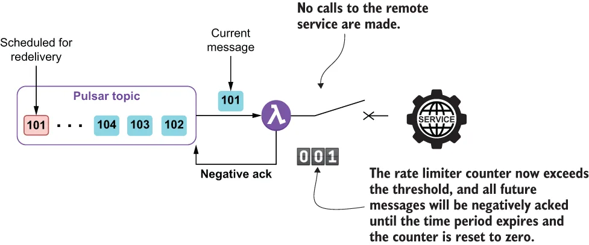

While the circuit breaker pattern was designed to prohibit service calls only after a preconfigured number of faults had been detected over a period of time, the rate limiter pattern, on the other hand, prohibits service calls after a preconfigured number of calls have been made within a given period, regardless of whether or not they were successful. As the name implies, the rate limiter pattern is used to limit the frequency at which a remote service can be called and is useful for situations where you want to restrict the number of calls made over a given period of time. One such example would be if we called a web service, such as the Google API, that restricts the number of calls you can make with a free API key to only 60 per minute.
熔断器模式的设计是：只在一段时间内检测到预先配置好次数的故障之后，才禁止服务调用；而限流器（rate limiter）模式则相反——只要在一个给定时间段内已经发出了预先配置好次数的调用，无论这些调用成功与否，就禁止继续调用。顾名思义，限流器模式被用来限制调用某个远程服务的频率，适用于那些你希望限制一段时间内调用次数的场景。一个典型的例子是：假如我们调用的是 Google API 这样的 Web 服务，它用免费 API key 时限制你每分钟只能调用 60 次。

Figure 9.10 If the rate limiter is configured to permit 100 calls per minute, then the first 100 messages would be permitted to invoke the service. The 101st message and all subsequent messages will not be permitted to call the service and, instead, will be negatively acknowledged. After one minute elapses, another 100 messages can be processed.
图 9.10 如果限流器被配置为每分钟允许 100 次调用，那么前 100 条消息会被允许调用该服务。第 101 条及之后的所有消息都将不被允许调用该服务，取而代之的是被否定确认。一分钟过去之后，又可以再处理 100 条消息。
When using this pattern, all incoming messages result in a call to the remote service up to a preconfigured number. The rate limiter keeps track of how many calls have been made to the service, and once the limit is reached, prohibits any additional calls for the remainder of the preconfigured time window, as shown in figure 9.10. In order to utilize the rate limiter pattern inside your Pulsar function, you need to wrap the remote service call inside a decorator, as shown in listing 9.4.
使用这个模式时，所有 incoming 消息都会导致一次对远程服务的调用，直到达到那个预先配置好的次数为止。限流器会记录下已经对该服务发出了多少次调用，一旦达到上限，就在预先配置好的时间窗口所剩的余下时间里禁止任何额外的调用，如图 9.10 所示。要在自己的 Pulsar 函数中使用限流器模式，你需要把远程服务调用包进一个装饰器里，如清单 9.4 所示。
Listing 9.5 Utilizing the rate limiter pattern inside a Pulsar function
import io.github.resilience4j.decorators.Decorators;
import io.github.resilience4j.ratelimiter.*;
...
public class GoogleGeoEncodingService implements Function<Address, Void> {
public Void process(Address addr, Context ctx) throws Exception {
if (!initalized) {
init(ctx); ❶
}
CheckedFunction0<String> decoratedFunction =
Decorators.ofCheckedSupplier(getFunction(addr)) ❷
.withRateLimiter(rateLimiter) ❸
.decorate();
LatLon geo = getLocation( ❹
Try.of(decoratedFunction) ❺
.onFailure(
(Throwable t) -> ctx.getLogger().error(t.getMessage())
).getOrNull());
if (geo != null) {
addr.setGeo(geo);
ctx.newOutputMessage(ctx.getOutputTopic(),
AvroSchema.of(Address.class))
.properties(ctx.getCurrentRecord().getProperties())
.value(addr)
.send();
} else {
// We made a valid call, but didn't get a valid geo back
}
return null;
}
private void init(Context ctx) {
config = RateLimiterConfig.custom()
.limitRefreshPeriod(Duration.ofMinutes(1)) ❻
.limitForPeriod(60) ❼
.timeoutDuration(Duration.ofSeconds(1)) ❽
.build();
rateLimiterRegistry = RateLimiterRegistry.of(config);
rateLimiter = rateLimiterRegistry.rateLimiter("name");
initalized = true;
}
private CheckedFunction0<String> getFunction(Address addr) { ❾
CheckedFunction0<String> fn = () -> {
OkHttpClient client = new OkHttpClient();
StringBuilder sb = new StringBuilder()
.append("https://maps.googleapis.com/maps/api/geocode")
.append("/json?address=")
.append(URLEncoder.encode(addr.getStreet().toString(),
StandardCharsets.UTF_8.toString())).append(",")
.append(URLEncoder.encode(addr.getCity().toString(),
StandardCharsets.UTF_8.toString())).append(",")
.append(URLEncoder.encode(addr.getState().toString(),
StandardCharsets.UTF_8.toString()))
.append("&key=").append("SIGN-UP-FOR-KEY");
Request request = new Request.Builder()
.url(sb.toString())
.build();
try (Response response = client.newCall(request).execute()) {
if (response.isSuccessful()) {
return response.body().string(); ❿
} else {
String reason = getErrorStatus(response.body().string());
if (NON_TRANSIENT_ERRORS.stream().anyMatch( ⓫
s -> reason.contains(s))) {
throw new NonTransientException();
} else if (TRANSIENT_ERRORS.stream().anyMatch(
s -> reason.contains(s))) {
throw new TransientException();
}
return null;
}
}
};
return fn;
}
private LatLon getLocation(String json) { ⓬
...
}
}
❶ Initializes the rate limiter
❶ 初始化限流器。
❷ Decorates the REST call to the Google Maps API
❷ 装饰对 Google Maps API 的 REST 调用。
❸ Assigns the rate limiter
❸ 装配限流器。
❹ Parses the response from the REST call
❹ 解析 REST 调用的响应。
❺ Invokes the decorated function
❺ 调用这个被装饰过的函数。
❻ The rate interval is one minute.
❻ 速率区间为一分钟。
❼ Sets a limit of 60 calls per rate interval
❼ 设定每个速率区间内 60 次调用的限额。
❽ Wait one second between subsequent calls.
❽ 后续各次调用之间等待一秒。
❾ Returns a function containing the REST API call logic
❾ 返回一个包含 REST API 调用逻辑的函数。
❿ If we got a valid response, return the JSON string with the latitude/longitude.
❿ 如果我们拿到了有效响应，就返回那个带有纬度/经度的 JSON 字符串。
⓫ Determine the error type based on the error message.
⓫ 依据错误消息判定错误类型。
⓬ Parses the JSON response from the Google Maps REST API call
⓬ 解析来自 Google Maps REST API 调用的 JSON 响应。
This function calls the Google Maps API and limits the number of attempts to 60 per minute to stay in compliance with Google’s terms of use for a free account. If the number of calls exceeds this amount, then Google will block access to the API for our account as a preventative measure for a brief period of time. Therefore, we have taken proactive steps to prevent that condition from occurring.
这个函数调用 Google Maps API，并把尝试次数限制为每分钟 60 次，以符合 Google 对免费账户的使用条款。如果调用次数超过这个数量，Google 就会作为一种预防措施，在一段短暂的时间内封禁我们账户对该 API 的访问。因此，我们已经主动采取措施，防止那种情况发生。
Issues and considerations
问题与考量
While this is a very useful pattern to use when interacting with an external system, such as a web service or a database, be sure to consider the following factors when implementing it inside your Pulsar function:
虽然在与外部系统（例如 Web 服务或数据库）交互时，这是一个非常有用的模式，但在自己的 Pulsar 函数中实现它时，务必考虑以下这些因素：
This pattern will almost certainly decrease the throughput for the function, so be sure to account for this throughout the entire data flow to make sure the upstream functions don’t overwhelm the rate-limited function.
这个模式几乎必然会降低该函数的吞吐量，因此务必在整个数据流中把这一点考虑进去，以确保上游的那些函数不会把那个被限流的函数压垮。
This pattern should be used to protect a remote service from getting overwhelmed with calls or to restrict the number of calls to avoid exceeding a quota which would result in you getting locked out by the third-party vendor.
这个模式应当被用来保护某个远程服务不被调用洪流淹没，或者用来限制调用次数，以避免超出配额——那会导致你被第三方供应商拒之门外。